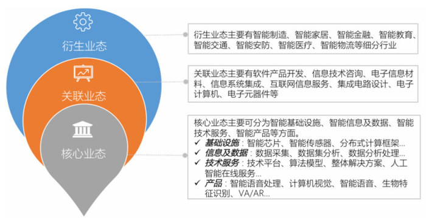
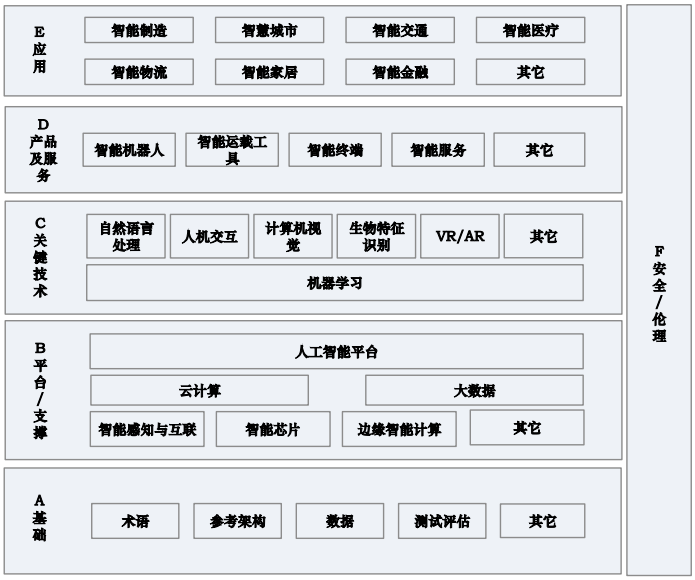

人工智能全景 (AI Map)
by Jianan, 2019.01-02. 本文以不同专业报告为模板进行了适当增删和修改，同时选取并集合了全球高质量的AI全景报告，旨在提供一张快速了解AI全貌的地图。具体学科知识和技术细节请参阅专业课程/书籍/技术文档。源链接将导引至文章来源官网或者直接至PDF, 若源链接失效，请点击本地下载。本文仅供个人参考，禁止用于商业用途。
第一章（关键技术）
机器学习(ML)
机器学习（Machine Learning）研究计算机怎样模拟或实现人类的学习行为，以获取新的知识或技能，重新组织已有的知识结构使之不断改善自身的性能，是人工智能技术的核心。是一门涉及统计学、系统辨识、逼近理论、神经网络、优化理论、计算机科学、脑科学等诸多领域的交叉学科。
基于数据的机器学习是现代智能技术中的重要方法之一，研究从观测数据（样本）出发寻找规律，利用这些规律对未来数据或无法观测的数据进行预测。根据学习模式、学习方法以及算法的不同，机器学习存在不同的分类方法。
-
根据学习模式将机器学习分类为监督学习、无监督学习和强化学习等。
-
监督学习 利用已标记的有限训练数据集，通过某种学习策略/方法建立一个模型，实现对新数据/实例的标记（分类）/映射。最典型的监督学习算法包括回归和分类。监督学习要求训练样本的分类标签已知，分类标签精确度越高，样本越具有代表性，学习模型的准确度越高。监督学习在自然语言处理、信息检索、文本挖掘、手写体辨识、垃圾邮件侦测等领域获得了广泛应用。
-
无监督学习
是利用无标记的有限数据描述隐藏在未标记数据中的结构/规律，最典型的非监督学习算法包括单类密度估计、单类数据降维、聚类等。无监督学习不需要训练样本和人工标注数据，便于压缩数据存储、减少计算量、提升算法速度，还可以避免正、负样本偏移引起的分类错误问题。主要用于经济预测、异常检测、数据挖掘、图像处理、模式识别等领域，例如组织大型计算机集群、社交网络分析、市场分割、天文数据分析等。
-
强化学习 是智能系统从环境到行为映射的学习，以使强化信号函数值最大。 由于外部环境提供的信息很少，强化学习系统必须靠自身的经历进行学习。强化 学习的目标是学习从环境状态到行为的映射，使得智能体选择的行为能够获得环 境最大的奖赏，使得外部环境对学习系统在某种意义下的评价为最佳。其在机器 人控制、无人驾驶、下棋、工业控制等领域获得成功应用。
-
-
根据学习方法可以将机器学习分为传统机器学习和深度学习。
-
传统机器学习 从一些观测（训练）样本出发，试图发现不能通过原理分析获得的规律，实现对未来数据行为或趋势的准确预测。相关算法包括逻辑回归、隐马尔科夫方法、支持向量机方法、K 近邻方法、三层人工神经网络方法、Adaboost算法、贝叶斯方法以及决策树方法等。传统机器学习平衡了学习结果的有效性与学习模型的可解释性，为解决有限样本的学习问题提供了一种框架，主要用于有限样本情况下的模式分类、回归分析、概率密度估计等。传统机器学习方法共同的重要理论基础之一是统计学，在自然语言处理、语音识别、图像识别、信息检索和生物信息等许多计算机领域获得了广泛应用。
-
深度学习 深度学习是建立深层结构模型的学习方法，典型的深度学习算法包括深度置信网络、卷积神经网络、受限玻尔兹曼机和循环神经网络等。深度学习又称为深度神经网络（指层数超过 3 层的神经网络）。深度学习作为机器学习研究中的一个新兴领域，由 Hinton 等人于 2006 年提出。深度学习源于多层神经网络，其实质是给出了一种将特征表示和学习合二为一的方式。深度学习的特点是放弃了可解释性，单纯追求学习的有效性。经过多年的摸索尝试和研究，已经产生了诸多深度神经网络的模型，其中卷积神经网络、循环神经网络是两类典型的模型。卷积神经网络常被应用于空间性分布数据；循环神经网络在神经网络中引入了记忆和反馈，常被应用于时间性分布数据。深度学习框架是进行深度学习的基础底层框架，一般包含主流的神经网络算法模型，提供稳定的深度学习 API，支持训练模型在服务器和 GPU、TPU 间的分布式学习，部分框架还具备在包括移动设备、云平台在内的多种平台上运行的移植能力，从而为深度学习算法带来前所未有的运行速度和实用性。目前主流的开源算法框架有 TensorFlow、Caffe/Caffe2、CNTK、 MXNet、Paddle-paddle、Torch/PyTorch、Theano 等。
-
-
此外还包括迁移学习、主动学习和演化学习等。
- 迁移学习 迁移学习是指当在某些领域无法取得足够多的数据进行模型训练时，利用另一领域数据获得的关系进行的学习。迁移学习可以把已训练好的模型参数迁移到新的模型指导新模型训练，可以更有效的学习底层规则、减少数据量。目前的迁移学习技术主要在变量有限的小规模应用中使用，如基于传感器网络的定位，文字分类和图像分类等。未来迁移学习将被广泛应用于解决更有挑战性的问题，如视频分类、社交网络分析、逻辑推理等。
- 主动学习 主动学习通过一定的算法查询最有用的未标记样本，并交由专家进行标记，然后用查询到的样本训练分类模型来提高模型的精度。主动学习能够选择性地获取知识，通过较少的训练样本获得高性能的模型，最常用的策略是通过不确定性准则和差异性准则选取有效的样本。
- 演化学习 演化学习对优化问题性质要求极少，只需能够评估解的好坏即可，适用于求解复杂的优化问题，也能直接用于多目标优化。演化算法包括粒子群优化算法、多目标演化算法等。目前针对演化学习的研究主要集中在演化数据聚类、对演化数据更有效的分类，以及提供某种自适应机制以确定演化机制的影响等。
知识图谱(Knowledge Graph)
知识图谱本质上是结构化的语义知识库，是一种由节点和边组成的图数据结构，以符号形式描述物理世界中的概念及其相互关系，其基本组成单位是“实体—关系—实体”三元组，以及实体及其相关“属性—值”对。不同实体之间通过关系相互联结，构成网状的知识结构。在知识图谱中，每个节点表示现实世界的“实体”，每条边为实体与实体之间的“关系”。通俗地讲，知识图谱就是把所有不同种类的信息连接在一起而得到的一个关系网络，提供了从“关系”的角度去分析问题的能力。
知识图谱可用于反欺诈、不一致性验证、组团欺诈等公共安全保障领域，需要用到异常分析、静态分析、动态分析等数据挖掘方法。特别地，知识图谱在搜索引擎、可视化展示和精准营销方面有很大的优势，已成为业界的热门工具。但是，知识图谱的发展还有很大的挑战，如数据的噪声问题，即数据本身有错误或者数据存在冗余。随着知识图谱应用的不断深入，还有一系列关键技术需要突破.
自然语言处理(NLP)
自然语言处理 (Natural Language Processing) 是计算机科学领域与人工智能领域中的一个重要方向，研究能 实现人与计算机之间用自然语言进行有效通信的各种理论和方法，涉及的领域较多，主要包括机器翻译、机器阅读理解和问答系统等。
-
机器翻译 机器翻译技术是指利用计算机技术实现从一种自然语言到另外一种自然语言的翻译过程。基于统计的机器翻译方法突破了之前基于规则和实例翻译方法的局限性，翻译性能取得巨大提升。基于深度神经网络的机器翻译在日常口语等一些场景的成功应用已经显现出了巨大的潜力。随着上下文的语境表征和知识逻辑推理能力的发展，自然语言知识图谱不断扩充，机器翻译将会在多轮对话翻译及篇章翻译等领域取得更大进展。
目前非限定领域机器翻译中性能较佳的一种是统计机器翻译，包括训练及解码两个阶段。训练阶段的目标是获得模型参数，解码阶段的目标是利用所估计的参数和给定的优化目标，获取待翻译语句的最佳翻译结果。统计机器翻译主要包括语料预处理、词对齐、短语抽取、短语概率计算、最大熵调序等步骤。基于神经网络的端到端翻译方法不需要针对双语句子专门设计特征模型，而是直接把源语言句子的词串送入神经网络模型，经过神经网络的运算，得到目标语言句子的翻译结果。在基于端到端的机器翻译系统中，通常采用递归神经网络或卷积神经网络对句子进行表征建模，从海量训练数据中抽取语义信息，与基于短语的统计翻译相比，其翻译结果更加流畅自然，在实际应用中取得了较好的效果。
-
语义理解 语义理解技术是指利用计算机技术实现对文本篇章的理解，并且回答与篇章相关问题的过程。语义理解更注重于对上下文的理解以及对答案精准程度的把控。随着 MCTest 数据集的发布，语义理解受到更多关注，取得了快速发展，相关数据集和对应的神经网络模型层出不穷。语义理解技术将在智能客服、产品自动问答等相关领域发挥重要作用，进一步提高问答与对话系统的精度。在数据采集方面，语义理解通过自动构造数据方法和自动构造填空型问题的方法来有效扩充数据资源。为了解决填充型问题，一些基于深度学习的方法相继提出，如基于注意力的神经网络方法。当前主流的模型是利用神经网络技术对篇章、问题建模，对答案的开始和终止位置进行预测，抽取出篇章片段。对于进一步泛化的答案，处理难度进一步提升，目前的语义理解技术仍有较大的提升空间。
-
问答系统 问答系统分为开放领域的对话系统和特定领域的问答系统。问答系统技术是指让计算机像人类一样用自然语言与人交流的技术。人们可以向问答系统提交用自然语言表达的问题，系统会返回关联性较高的答案。尽管问答系统目前已经有了不少应用产品出现，但大多是在实际信息服务系统和智能手机助手等领域中的应用，在问答系统鲁棒性方面仍然存在着问题和挑战。自然语言处理面临四大挑战：一是在词法、句法、语义、语用和语音等不同层面存在不确定性；二是新的词汇、术语、语义和语法导致未知语言现象的不可预测性；三是数据资源的不充分使其难以覆盖复杂的语言现象；四是语义知识的模糊性和错综复杂的关联性难以用简单的数学模型描述，语义计算需要参数庞大的非线性计算。
人机交互(HCI)
人机交互(human-computer-interaction)主要研究人和计算机之间的信息交换，主要包括人到计算机和计算机到人的两部分信息交换，是人工智能领域的重要的外围技术。人机交互是与认知心理学、人机工程学、多媒体技术、虚拟现实技术等密切相关的综合学科。传统的人与计算机之间的信息交换主要依靠交互设备进行，主要包括键盘、鼠标、操纵杆、数据服装、眼动跟踪器、位置跟踪器、数据手套、压力笔等输入设备，以及打印机、绘图仪、显示器、头盔式显示器、音箱等输出设备。人机交互技术除了传统的基本交互和图形交互外，还包括语音交互、情感交互、体感交互及脑机交互等技术，以下对后四种与人工智能关联密切的典型交互手段进行介绍。
- 语音交互 语音交互是一种高效的交互方式，是人以自然语音或机器合成语音同计算机进行交互的综合性技术，结合了语言学、心理学、工程和计算机技术等领域的知识。语音交互不仅要对语音识别和语音合成进行研究，还要对人在语音通道下的交互机理、行为方式等进行研究。语音交互过程包括四部分：语音采集、语音识别、语义理解和语音合成。语音采集完成音频的录入、采样及编码；语音识别完成语音信息到机器可识别的文本信息的转化；语义理解根据语音识别转换后的文本字符或命令完成相应的操作；语音合成完成文本信息到声音信息的转换。作为人类沟通和获取信息最自然便捷的手段，语音交互比其他交互方式具备更多优势，能为人机交互带来根本性变革，是大数据和认知计算时代未来发展的制高点，具有广阔的发展前景和应用前景。
- 情感交互 情感是一种高层次的信息传递，而情感交互是一种交互状态，它在表达功能和信息时传递情感，勾起人们的记忆或内心的情愫。传统的人机交互无法理解和适应人的情绪或心境，缺乏情感理解和表达能力，计算机难以具有类似人一样的智能，也难以通过人机交互做到真正的和谐与自然。情感交互就是要赋予计算机类似于人一样的观察、理解和生成各种情感的能力，最终使计算机像人一样能进行自然、亲切和生动的交互。情感交互已经成为人工智能领域中的热点方向，旨在让人机交互变得更加自然。目前，在情感交互信息的处理方式、情感描述方式、情感数据获取和处理过程、情感表达方式等方面还有诸多技术挑战。
- 体感交互 体感交互是个体不需要借助任何复杂的控制系统，以体感技术为基础，直接通过肢体动作与周边数字设备装置和环境进行自然的交互。依照体感方式与原理的不同，体感技术主要分为三类：惯性感测、光学感测以及光学联合感测。体感交互通常由运动追踪、手势识别、运动捕捉、面部表情识别等一系列技术支撑。与其他交互手段相比，体感交互技术无论是硬件还是软件方面都有了较大的提升，交互设备向小型化、便携化、使用方便化等方面发展，大大降低了对用户的约束，使得交互过程更加自然。目前，体感交互在游戏娱乐、医疗辅助与康复、全自动三维建模、辅助购物、眼动仪等领域有了较为广泛的应用。
- 脑机交互 脑机交互又称为脑机接口，指不依赖于外围神经和肌肉等神经通道，直接实现大脑与外界信息传递的通路。脑机接口系统检测中枢神经系统活动，并将其转化为人工输出指令，能够替代、修复、增强、补充或者改善中枢神经系统的正常输出，从而改变中枢神经系统与内外环境之间的交互作用。脑机交互通过对神经信号解码，实现脑信号到机器指令的转化，一般包括信号采集、特征提取和命令输出三个模块。从脑电信号采集的角度，一般将脑机接口分为侵入式和非侵入式两大类。除此之外，脑机接口还有其他常见的分类方式：按照信号传输方向可以分为脑到机、机到脑和脑机双向接口；按照信号生成的类型，可分为自发式脑机接口和诱发式脑机接口；按照信号源的不同还可分为基于脑电的脑机接口、基于功能性核磁共振的脑机接口以及基于近红外光谱分析的脑机接口。
计算机视觉(CV)
计算机视觉(computer vision)是使用计算机模仿人类视觉系统的科学，让计算机拥有类似人类提取、处理、理解和分析图像以及图像序列的能力。自动驾驶、机器人、智能医疗等领域均需要通过计算机视觉技术从视觉信号中提取并处理信息。近来随着深度学习的发展，预处理、特征提取与算法处理渐渐融合，形成端到端的人工智能算法技术。根据解决的问题，计算机视觉可分为计算成像学、图像理解、三维视觉、动态视觉和视频编解码五大类。
- 计算成像学 计算成像学是探索人眼结构、相机成像原理以及其延伸应用的科学。在相机成像原理方面，计算成像学不断促进现有可见光相机的完善，使得现代相机更加轻便，可以适用于不同场景。同时计算成像学也推动着新型相机的产生，使相机超出可见光的限制。在相机应用科学方面，计算成像学可以提升相机的能力，从而通过后续的算法处理使得在受限条件下拍摄的图像更加完善，例如图像去噪、去模糊、暗光增强、去雾霾等，以及实现新的功能，例如全景图、软件虚化、超分辨率等。
- 图像理解 图像理解是通过用计算机系统解释图像，实现类似人类视觉系统理解外部世界的一门科学。通常根据理解信息的抽象程度可分为三个层次：浅层理解，包括图像边缘、图像特征点、纹理元素等；中层理解，包括物体边界、区域与平面等；高层理解，根据需要抽取的高层语义信息，可大致分为识别、检测、分割、姿态估计、图像文字说明等。目前高层图像理解算法已逐渐广泛应用于人工智能系统，如刷脸支付、智慧安防、图像搜索等。
- 三维视觉 三维视觉即研究如何通过视觉获取三维信息（三维重建）以及如何理解所获取的三维信息的科学。三维重建可以根据重建的信息来源，分为单目图像重建、多目图像重建和深度图像重建等。三维信息理解，即使用三维信息辅助图像理解或者直接理解三维信息。三维信息理解可分为，浅层：角点、边缘、法向量等；中层：平面、立方体等；高层：物体检测、识别、分割等。三维视觉技术可以广泛应用于机器人、无人驾驶、智慧工厂、虚拟/增强现实等方向。
- 动态视觉 动态视觉即分析视频或图像序列，模拟人处理时序图像的科学。通常动态视觉问题可以定义为寻找图像元素，如像素、区域、物体在时序上的对应，以及提取其语义信息的问题。动态视觉研究被广泛应用在视频分析以及人机交互等方面。
- 视频编解码 视频编解码是指通过特定的压缩技术，将视频流进行压缩。视频流传输中最为重要的编解码标准有国际电联的 H.261、H.263、H.264、H.265、M-JPEG 和MPEG 系列标准。视频压缩编码主要分为两大类：无损压缩和有损压缩。无损压缩指使用压缩后的数据进行重构时，重构后的数据与原来的数据完全相同，例如磁盘文件的压缩。有损压缩也称为不可逆编码，指使用压缩后的数据进行重构时，重构后的数据与原来的数据有差异，但不会影响人们对原始资料所表达的信息产生误解。有损压缩的应用范围广泛，例如视频会议、可视电话、视频广播、视频监控等。
- 目前，计算机视觉技术发展迅速，已具备初步的产业规模。未来计算机视觉技术的发展主要面临以下挑战：一是如何在不同的应用领域和其他技术更好的结合，计算机视觉在解决某些问题时可以广泛利用大数据，已经逐渐成熟并且可以超过人类，而在某些问题上却无法达到很高的精度；二是如何降低计算机视觉算法的开发时间和人力成本，目前计算机视觉算法需要大量的数据与人工标注，需要较长的研发周期以达到应用领域所要求的精度与耗时；三是如何加快新型算法的设计开发，随着新的成像硬件与人工智能芯片的出现，针对不同芯片与数据采集设备的计算机视觉算法的设计与开发也是挑战之一。
生物特征识别(Biometrics)
生物特征识别技术是指通过个体生理特征或行为特征对个体身份进行识别认证的技术。从应用流程看，生物特征识别通常分为注册和识别两个阶段。注册阶段通过传感器对人体的生物表征信息进行采集，如利用图像传感器对指纹和人脸等光学信息、麦克风对说话声等声学信息进行采集，利用数据预处理以及特征提取技术对采集的数据进行处理，得到相应的特征进行存储。识别过程采用与注册过程一致的信息采集方式对待识别人进行信息采集、数据预处理和特征提取，然后将提取的特征与存储的特征进行比对分析，完成识别。从应用任务看，生物特征识别一般分为辨认与确认两种任务，辨认是指从存储库中确定待识别人身份的过程，是一对多的问题；确认是指将待识别人信息与存储库中特定单人信息进行比对，确定身份的过程，是一对一的问题。
生物特征识别技术涉及的内容十分广泛，包括指纹、掌纹、人脸、虹膜、指静脉、声纹、步态等多种生物特征，其识别过程涉及到图像处理、计算机视觉、语音识别、机器学习等多项技术。目前生物特征识别作为重要的智能化身份认证技术，在金融、公共安全、教育、交通等领域得到广泛的应用。下面将对指纹识别、人脸识别、虹膜识别、指静脉识别、声纹识别以及步态识别等技术进行介绍。
- 指纹识别 指纹识别过程通常包括数据采集、数据处理、分析判别三个过程。数据采集通过光、电、力、热等物理传感器获取指纹图像；数据处理包括预处理、畸变校正、特征提取三个过程；分析判别是对提取的特征进行分析判别的过程。
- 人脸识别 人脸识别是典型的计算机视觉应用，从应用过程来看，可将人脸识别技术划分为检测定位、面部特征提取以及人脸确认三个过程。人脸识别技术的应用主要受到光照、拍摄角度、图像遮挡、年龄等多个因素的影响，在约束条件下人脸识别技术相对成熟，在自由条件下人脸识别技术还在不断改进。
- 虹膜识别 虹膜识别的理论框架主要包括虹膜图像分割、虹膜区域归一化、特征提取和识别四个部分，研究工作大多是基于此理论框架发展而来。虹膜识别技术应用的主要难题包含传感器和光照影响两个方面：一方面，由于虹膜尺寸小且受黑色素遮挡，需在近红外光源下采用高分辨图像传感器才可清晰成像，对传感器质量和稳定性要求比较高；另一方面，光照的强弱变化会引起瞳孔缩放，导致虹膜纹理产生复杂形变，增加了匹配的难度。
- 指静脉识别 指静脉识别是利用了人体静脉血管中的脱氧血红蛋白对特定波长范围内的近红外线有很好的吸收作用这一特性，采用近红外光对指静脉进行成像与识别的技术。由于指静脉血管分布随机性很强，其网络特征具有很好的唯一性，且属于人体内部特征，不受到外界影响，因此模态特性十分稳定。指静脉识别技术应用 面临的主要难题来自于成像单元。
- 声纹识别 声纹识别是指根据待识别语音的声纹特征识别说话人的技术。声纹识别技术通常可以分为前端处理和建模分析两个阶段。声纹识别的过程是将某段来自某个人的语音经过特征提取后与多复合声纹模型库中的声纹模型进行匹配，常用的识别方法可以分为模板匹配法、概率模型法等。
- 步态识别 步态是远距离复杂场景下唯一可清晰成像的生物特征，步态识别是指通过身体体型和行走姿态来识别人的身份。相比上述几种生物特征识别，步态识别的技术难度更大，体现在其需要从视频中提取运动特征，以及需要更高要求的预处理算法，但步态识别具有远距离、跨角度、光照不敏感等优势。
虚拟现实/增强现实(VR/AR)
虚拟现实（VR）/增强现实（AR）是以计算机为核心的新型视听技术。结合相关科学技术，在一定范围内生成与真实环境在视觉、听觉、触感等方面高度近似的数字化环境。用户借助必要的装备与数字化环境中的对象进行交互，相互影响，获得近似真实环境的感受和体验，通过显示设备、跟踪定位设备、触力觉交互设备、数据获取设备、专用芯片等实现。
虚拟现实/增强现实从技术特征角度，按照不同处理阶段，可以分为获取与建模技术、分析与利用技术、交换与分发技术、展示与交互技术以及技术标准与评价体系五个方面。
- 获取与建模技术研究如何把物理世界或者人类的创意进行数字化和模型化，难点是三维物理世界的数字化和模型化技术；
- 分析与利用技术重点研究对数字内容进行分析、理解、搜索和知识化方法，其难点是在于内容的语义表示和分析；
- 交换与分发技术主要强调各种网络环境下大规模的数字化内容流通、转换、集成和面向不同终端用户的个性化服务等，其核心是开放的内容交换和版权管理技术；
- 展示与交换技术重点研究符合人类习惯数字内容的各种显示技术及交互方法，以期提高人对复杂信息的认知能力，其难点在于建立自然和谐的人机交互环境；
- 标准与评价体系重点研究虚拟现实/增强现实基础资源、内容编目、信源编码等的规范标准以及相应的评估技术。
目前虚拟现实/增强现实面临的挑战主要体现在智能获取、普适设备、自由交互和感知融合四个方面。在硬件平台与装置、核心芯片与器件、软件平台与工具、相关标准与规范等方面存在一系列科学技术问题。总体来说虚拟现实/增强现实呈现虚拟现实系统智能化、虚实环境对象无缝融合、自然交互全方位与舒适化的发展趋势。
技术发展趋势
-
技术平台开源化 开源的学习框架在人工智能领域的研发成绩斐然，对深度学习领域影响巨大。开源的深度学习框架使得开发者可以直接使用已经研发成功的深度学习工具，减少二次开发，提高效率，促进业界紧密合作和交流。国内外产业巨头也纷纷意识到通过开源技术建立产业生态，是抢占产业制高点的重要手段。通过技术平台的开源化，可以扩大技术规模，整合技术和应用，有效布局人工智能全产业链。谷歌、百度等国内外龙头企业纷纷布局开源人工智能生态，未来将有更多的软硬件企业参与开源生态。
-
专用智能向通用智能发展
目前的人工智能发展主要集中在专用智能方面，具有领域局限性。随着科技的发展，各领域之间相互融合、相互影响，需要一种范围广、集成度高、适应能力强的通用智能，提供从辅助性决策工具到专业性解决方案的升级。通用人工智能具备执行一般智慧行为的能力，可以将人工智能与感知、知识、意识和直觉等人类的特征互相连接，减少对领域知识的依赖性、提高处理任务的普适性，这将是人工智能未来的发展方向。未来的人工智能将广泛的涵盖各个领域，消除各领域之间的应用壁垒。
-
智能感知向智能认知方向迈进
人工智能的主要发展阶段包括：运算智能、感知智能、认知智能，这一观点得到业界的广泛认可。早期阶段的人工智能是运算智能，机器具有快速计算和记忆存储能力。当前大数据时代的人工智能是感知智能，机器具有视觉、听觉、触觉等感知能力。随着类脑科技的发展，人工智能必然向认知智能时代迈进，即让机器能理解会思考
第二章（产业分析）
产业现状及趋势
人工智能产业生态图，主要为
- 核心业态
- 基础设施
- 信息数据
- 技术服务
- 智能产品
- 关联业态
- 衍生业态

智能基础设施
-
智能芯片 智能芯片从应用角度可以分为训练和推理两种类型。从部署场景角度可以分为云端和设备端两大类。训练过程由于涉及海量的训练数据和复杂的深度神经网络结构，需要庞大的计算规模，主要使用智能芯片集群来完成。与训练的计算量相比，推理的计算量较少，但仍然涉及大量的矩阵运算。目前，训练和推理通常都在云端实现，只有对实时性要求很高的设备会交由设备端进行处理。按技术架构来看，智能芯片可以分为通用类芯片（CPU、GPU、FPGA）、基于 FPGA 的半定制化芯片、全定制化 ASIC 芯片、类脑计算芯片（IBM TrueNorth）。另外，主要的人工智能处理器还有 DPU、BPU、NPU、EPU 等适用于不同场景和功能的人工智能芯片。
随着互联网用户量和数据规模的急剧膨胀，人工智能发展对计算性能的要求迫切增长，对 CPU 计算性能提升的需求超过了摩尔定律的增长速度。同时，受限于技术原因，传统处理器性能也无法按照摩尔定律继续增长，发展下一代智能芯片势在必行。未来的智能芯片主要是在两个方向发展：一是模仿人类大脑结构的芯片，二是量子芯片。智能芯片是人工智能时代的战略制高点，预计到 2020年人工智能芯片全球市场规模将突破百亿美元。
-
智能传感器 智能传感器是具有信息处理功能的传感器。智能传感器带有微处理机，具备采集、处理、交换信息等功能，是传感器集成化与微处理机相结合的产物。智能传感器属于人工智能的神经末梢，用于全面感知外界环境。各类传感器的大规模部署和应用为实现人工智能创造了不可或缺的条件。不同应用场景，如智能安防、智能家居、智能医疗等对传感器应用提出了不同的要求。未来，随着人工智能应用领域的不断拓展，市场对传感器的需求将不断增多，2020 年市场规模有望突破 4600 亿美元。未来，高敏度、高精度、高可靠性、微型化、集成化将成为智能传感器发展的重要趋势。
-
分布式计算框架 面对海量的数据处理、复杂的知识推理，常规的单机计算模式已经不能支撑。所以，计算模式必须将巨大的计算任务分成小的单机可以承受的计算任务，即云计算、边缘计算、大数据技术提供了基础的计算框架。目前流行的分布式计算框架如 OpenStack、Hadoop、Storm、Spark、Samza、Bigflow 等。各种开源深度学习框架也层出不穷，其中包括 TensorFlow、Caffe、Keras、CNTK、Torch7、MXNet、Leaf、Theano、DeepLearning4、Lasagne、Neon 等等。
智能信息数据
目前，在人工智能数据采集、分析、处理方面的企业主要有两种：一种是数据集提供商，以提供数据为自身主要业务，为需求方提供机器学习等技术所需要的不同领域的数据集；另一种是数据采集、分析、处理综合性厂商，自身拥有获取数据的途径，并对采集到的数据进行分析处理，最终将处理后的结果提供给需求方进行使用。对于一些大型企业，企业本身也是数据分析处理结果的需求方。
智能技术服务
主要关注如何构建人工智能的技术平台，并对外提供人工智能相关的服务。此类厂商在人工智能产业链中处于关键位置，依托基础设施和大量的数据，为各类人工智能的应用提供关键性的技术平台、解决方案和服务。目前，从提供服务的类型来看，提供技术服务厂商包括以下几类：
-
提供人工智能的技术平台和算法模型。此类厂商主要针对用户或者行业需求，提供人工智能技术平台以及算法模型。用户可以在人工智能平台之上，通过一系列的算法模型来进行人工智能的应用开发。此类厂商主要关注人工智能的通用计算框架、算法模型、通用技术等关键领域。
-
提供人工智能的整体解决方案。此类厂商主要针对用户或者行业需求，设计和提供包括软、硬件一体的行业人工智能解决方案，整体方案中集成多种人工智能算法模型以及软、硬件环境，帮助用户或行业解决特定的问题。此类厂商重点关注人工智能在特定领域或者特定行业的应用。
-
提供人工智能在线服务。此类厂商一般为传统的云服务提供厂商，主要依托其已有的云计算和大数据应用的用户资源，聚集用户的需求和行业属性，为客户提供多类型的人工智能服务；从各类模型算法和计算框架的 API 等特定应用平台到特定行业的整体解决方案等，进一步吸引大量的用户使用，从而进一步完善其提供的人工智能服务。此类厂商主要提供相对通用的人工智能服务，同时也会关注一些重点行业和领域。
需要指出的是，上述三类角色并不是严格区分开的，很多情况下会出现重叠，随着技术的发展成熟，在人工智能产业链中已有大量的厂商同时具备上述两类或者三类角色的特征。
智能产品
智能产品是指将人工智能领域的技术成果集成化、产品化，具体的分类如下：
- 智能机器人
- 工业用：焊接，喷涂，搬运，清洁
- 个人用/家用：家政服务，教育娱乐，养老助残，安防监控，个人运输
- 公共服务：酒店，银行，餐厅，场馆服务
- 特种：水下，军用警用，石油矿业，建筑，安防，医疗
- 智能载具： 无人车/船/飞机/水面/潜艇
- 智能终端：智能手机，车载智能终端，可穿戴
- 自然语言处理：翻译，理解，问答，智能搜索
- 计算机视觉：图像分析，视频监控
- 生物特征识别：指纹，人脸，虹膜，指静脉，DNA，步态，掌纹
- VR/AR
- 人机交互：个人助理，智能客服，情感/体感交互，脑机交互
产业发展趋势
- 智能服务呈现线下和线上的无缝结合
- 智能化应用场景从单一向多元发展
- 人工智能和实体经济深度融合进程将进一步加快
第三章（标准化）
标准化工作意义
标准化工作对人工智能及其产业发展具有基础性、支撑性、引领性的作用，表现在：
- 有利于加快人工智能技术创新和成果转化。现阶段人工智能技术发展迅速，市场上逐步出现了可规模化、可商业化的产品和应用，需要以标准化的手段固化技术成果，实现快速创新推广；
- 有助于提升人工智能产品和服务质量。如市场上出现的人脸识别系统、智能音箱、服务机器人等产品，质量残次不齐，需要标准的统一规范，并配合以开展符合性测试评估的方式，提升产品和服务质量；
- 有助于切实保障用户安全。例如自动驾驶领域的“电车难题”伦理难题、苹果手机指纹泄露用户隐私等问题，引起了人们的广泛关注。如何保护用户权益是难点也是重点，这需要通过建立以人为本的原则，制定相关安全标准规范，确保智能系统遵从并服务于人类伦理，并确保信息安全；
- 有助于营造公平开放的人工智能产业生态。当前，行业巨头以开源算法、平台接口绑定等方式，打造自有深度学习框架等生态体系，造成用户数据信息较难迁移。这需要统一的标准实现厂商之间的互操作与协同工作，防止行业垄断、用户绑定，形成良性的产业生态。
标准需求分析
也类似于我们在标准化些什么东西？或者时候哪些方面需要被标准化？通过阅读下文，大致为研究范围，系统框架，智能等级评价，系统的互操作性，产品评估，技术标准化，安全和伦理道德。
- 界定人工智能需要研究的范围。人工智能从实验室研究转向各应用领域的实用系统，呈现快节奏增长的态势，这需要通过统一的术语进行界定，明确人工智能的内涵、外延和需求的核心概念，引导产业界正确认识和理解人工智能技术，便于大众广泛使用人工智能技术；
- 描述人工智能系统的框架。用户和开发者在面对人工智能系统的功能和实现时，普遍将人工智能系统看作是一个“黑盒子”，但有必要通过技术框架规范来增强人工智能系统的透明度。由于人工智能系统应用范围广泛，可能很难给出通用的人工智能框架，更现实的方式是在特定的范围和问题中给出特定的框架。例如，目前以机器学习为基础的人工智能系统是主流技术，并依赖于包括云计算和大数据在内的技术资源，可以以此为基础构建一个基于机器学习的人工智能系统框架，并对其中组件的功能进行界定；
- 评价人工智能系统的智能等级。按智能程度对人工智能系统进行划分一直存在争议，给出一个标杆来衡量它的智能等级是困难且具有挑战的工作。随着不同的应用场合对智能等级评价需求的进一步明确，需要标准化工作来逐步解决该问题；
- 促进人工智能系统的互操作性。人工智能系统及其组件有一定的复杂性，不同的应用场景涉及到的系统及组件不同。系统与系统之间，组件与组件之间的信息交互与共享，需要通过互操作性来保证。人工智能互操作性也涉及到不同的智能模块产品之间的互用性，达到数据互通，也就是不同的智能产品需要有标准化的接口。标准化工作保证人工智能系统的应用程序接口、服务及数据格式，通过标准和兼容接口，定义可互换的组件、数据和事务模型；
- 进行人工智能产品的评估。人工智能系统作为工业产品，需要在功能、性能、安全性、兼容性、互操作性等多方面进行评估，才能确保产品的质量和可用性，并为产业的可持续发展提供保障。评估工作一般包括测试、评价等一系列活动，评估对象可以是自动驾驶系统、服务机器人等产品，按照规范化的程序和手段，通过可测量的指标和可量化的评价系统得到科学的评估结果，同时配合培训、宣贯等手段推进标准的实施；
- 对关键技术进行标准化。对已经形成模式，并广泛应用的关键技术，应及时进行标准化，防止版本碎片化和独立性，确保互操作性和连续性。例如，深度学习框架绑定的用户数据，应当通过明确神经网络的数据表示方法和压缩算法，确保数据交换，且不被平台绑定，保障用户对数据拥有的权益，其它如人机交互技术、传感器接口、基本算法等基础标准也需要尽快制定；
- 确保安全及伦理道德。人工智能从各种设备、应用和网络中收集了大量的个人、生物或者其它特征数据，这些数据并不一定从系统设计之初就能够很好地组织管理并采取恰当的隐私保护措施。对人类的安全和生命安全有直接的影响的人工智能系统，可能会对人类构成威胁，需要在这类人工智能系统得到广泛应用之前，就通过标准化等手段对系统进行规范和评估，保障安全性；
- 针对行业应用特点的标准化。除了共性技术外，在特定行业中实施人工智能还存在个性化的需求与技术特色，典型的如家居应用、医疗应用、交通应用等，需考虑特定设备的功能性能特征、系统组成结构和相互关系等。
标准体系结构
人工智能标准体系结构包括“A 基础”、“B 平台/支撑”、“C 关键技术”、“D 产品及服务”、“E 应用”、“F 安全/伦理”等六个部分，主要反映标准体系各部分的组成关系 。

-
基础标准
该类标准主要针对人工智能基础进行规范，包括术语定义、参考架构、数据、测试评估等。针对已有人工智能术语相关标准，围绕人工智能发展现状开展标准制修订工作；深入研究人工智能相关技术及产业链，开展人工智能参考架构等标准研制工作；结合人工智能领域发展需求，开展用于数据训练的数据格式、标签、数据模型、质量要求等数据资源相关标准的研制；针对人工智能技术、行业发展较为成熟的领域，提取测试评估的共性需求，开展人工智能通用性测试指南、评估原则以及智能等级分级要求等标准研制。
-
平台/支撑标准 该类标准主要针对人工智能底层平台和支撑进行规范，包括大数据、云计算、智能感知及互联、边缘智能计算、智能芯片及人工智能平台等。用于支撑人工智能的大数据、云计算、智能感知及互联等标准化工作已具备 一定的基础。
- 大数据方面，重点研制系统级和工具级产品、数据开放共享等标准；
- 云计算方面，重点研制面向人工智能的异构计算等虚拟和物理资源池化、调度和管理标准；
- 智能感知与互联方面，重点开展高精度传感器、新型 MEMS 传感器相关标准制定，为人工智能的硬件发展提供标准支撑；
- 边缘智能计算方面，重点研制参考架构、轻量级运行环境要求等标准；
- 智能芯片方面，开展芯片性能测试要求等标准研制；
- 人工智能平台方面，重点研制人工智能计算框架、人工智能算法任务调度等通用功能要求，以及支持机器学习、知识图谱等不同计算模式的通用计算能力要求等相关标准。
-
关键技术标准 该类标准主要针对人工智能相关技术进行规范，包括机器学习、自然语言处理、计算机视觉、人机交互、生物特征识别以及 VR/AR 等关键技术。
- 在机器学习方面，开源在人工智能中有重要的影响，开源软件和开源社区往往由于其实验性、灵活性而领先一步，需要开展开源与标准化协调发展研究。同时，神经网络表示方法与模型压缩、机器学习算法性能评估等标准也是后续标准化工作的重点方向。
- 在自然语言处理方面，国内外自然语言处理技术及产业发展处于起步阶段，下一步可以开展以下标准化工作：语义库方面，包括语义库的结构、数据规范、接口规范等；信息提取规范方面，包括词性标注及其描述规范等；文本内容分析方面，包括内容相关度分析的准则和描述、使用方法，以及文本内容正确与否的判断准则及其相关性能评估规范等。
- 在计算机视觉方面，国内已开展计算机视觉术语标准的研究。由于不同应用场景对采集设备有着不同的要求，采集设备对于计算机视觉算法的开发有着很大的影响，需要规范数据采集设备的类型及对应参数要求；视觉采集数据与计算机视觉算法输出的结果（元数据）都是多种多样，如数据的格式、计算机视觉数据库（例如采用单一还是多种数据形式）、多类数据形式等，定义数据的格式、构建计算机视觉数据库（例如采用单一还是多种数据形式）、关联多类数据形式等都是亟待规范的问题；不同应用场景对于计算机视觉提出了不同的要求，如量化和规范不同行业对于计算机视觉的衡量方法也有着很大的标准化需求。
- 在人机交互方面，国内外已具备一定的标准化成果，主要集中在语音交互和手势交互方向。后续继续开展语音合成、识别等技术和接口相关测试标准研制，搭建智能语音交互系统标准符合性评估平台；研制手势识别等技术规范和服务接口规范等；进一步丰富智能人机交互的系统规范，如智能教育领域的基于多模式交互系统标准规范等。
- 在生物特征识别方面，标准化工作主要围绕图像数据、应用接口、系统应用以及性能测试四个方向进行。目前国内已完成对诸如指纹、人脸、虹膜等典型模态的识别设备通用规范、数据交换格式、样本质量等标准的研制，同时还建立了指纹检测平台，可依据已制定的符合性测试方法相关标准完成对指纹识别产品的标准符合性测试。随着 DNA、步态等新兴模态识别技术的发展以及互联网金融等应用场景的增多，亟需制定 DNA 数据质量、呈现攻击检测、安全评估及安全防范等标准，支撑生物特征识别产业发展。
- 在 VR/AR 方面，国内 VR/AR 领域目前已经开展了场景建模信息表示、增强现实术语、头戴式显示设备通用规范以及舒适度和安全测试方面的标准，但是VR/AR 的一些技术要求已超出了目前已有的一些配套行业的技术要求，针对目前我国虚拟现实内容制作、设备制造、领域应用存在的问题，需要开展框架、编解码标准、感知与交互、设备、应用、安全与健康、舒适等标准，形成分层次、结构化的统一标准体系。
-
产品及服务标准
- 在智能机器人方面，结合《国家机器人标准体系建设指南》工作部署，围绕服务机器人，重点攻克核心零部件、专用传感器技术标准，完善服务机器人硬件接口、安全使用以及多模态交互模式、功能集、服务机器人应用操作系统框架、服务机器人云平台通用要求等标准；围绕工业机器人，重点在工业机器人路径动态规划、协作型机器人设计规范、工业检测图像识别标定等开展标准化工作。
- 在智能运载工具方面，重点在智能网联汽车方面开展标准化工作。目前面临的主要问题是汽车智能化涉及的高性能协同传感技术、车载互联及通信技术、汽车智能化与网联化安全技术等。结合《国家车联网产业标准体系建设指南（智能网联汽车）》工作部署，重点开展先进驾驶辅助系统（ADAS）术语定义、汽车驾驶自动化分级、车载信息交互系统信息安全技术要求等标准制定工作。
- 在智能终端方面，建立智能终端的标准化和测试验证平台是提高智能终端产业规范发展的有效途径，为满足产业发展需要，亟需建立设备互联接口、内容服务接口、应用程序开发接口、系统安全技术、测试及评价等方面的标准，推动设备间的数据格式和标准协议的开放共享，推进产品和系统间的互联互通。
- 在智能服务方面，既包括图像识别、智能语音、自然语言处理、机器学习算法等人工智能模块通过 SaaS 服务方式向行业提供综合性解决方案，也包括利用人工智能技术改变传统 IT 服务。与之相应的标准化需求正在兴起，如不同商家的同一种服务在功能集、服务接口、通信交互协议、服务获取方式等方面存在较大差别，需求方选择服务时花费成本较高，急需标准化的规范和统一。下一步重点加强人工智能服务能力成熟度评价、智能服务参考架构等标准制定工作。
- 应用标准
- 在智能制造领域，我国智能制造标准化工作的快速推进为人工智能在智能制造中的应用探索提供了良好的基础。下一步，围绕《智能制造标准体系建设指南》要求部署，结合人工智能技术在智能制造中的应用，重点开展个性化定制、SCADA 数据分析、智能在线监测、预测性维护、高级排产和工艺优化、智能机 器人、基于 VR/AR 的维修保养等标准研究。
- 在智能家居领域，结合《智慧家庭综合标准化体系建设指南》文件要求，建议根据产业发展现状和技术发展，联合智能家居产业链上下游企业广泛参与共同构建并完善智能家居标准体系，重点制定智能家居主要应用领域关键技术、产品和服务标准，适时启动并参与若干重点标准的国际标准化进程。
- 在智能金融领域，智能金融未来将通过人工智能技术对信息进行预判、决策、行动，使得金融投资、分析变得更加精准，有利于打造标准化、模型化、智能化的风险控制系统，从而推动金融的发展。因此，结合金融领域应用，使用深度学习技术，基于机器学习技术构建金融知识图谱，从金融数据中自动发现模式，建议在人工智能金融数据标准化、金融征信标准化工作、金融风控标准化等开展研究工作。
- 在智慧城市领域，新型智慧城市已有标准化工作集中在基础通用类标准，具体应用领域相关标准仍需完善，下一步将结合人工智能在城市基础设施智能化、设施管理和运营、城市运行和管理等层面的应用情况，加强支撑人工智能技术与城市规划、建设、运行、服务、管理等方面深度融合的技术标准研究，开展人工智能应用成效动态评估指标工作。
- 在智能交通领域，国内已具备一定的标准化基础，下一步信息数据平台及综合管理系统是人工智能交通标准化工作的方向，重点开展智能交通数据信息平台、车辆与路网通信、电子车牌识别等标准，形成多维的智能交通监控、管理的一体化服务系统。
- 在智能医疗领域，国内已具备一定的标准化基础，但是还存在数据质量、数据和模型的隐私性、数据模型建立困难等问题，下一步重点开展生理监测、医疗监管智能化、医疗信息交换、数据平台接口、医疗数据质量评价等标准制定工作。
- 在智能物流领域，我国在智能物流技术及产业方面发展迅速，国内已具备一定的标准化基础，下一步相将重点针对智能物流中的物流智能规划规范、智能识别通用要求、智能仓储调度规范、结合供应链的物流配置要求等方面开展标准化工作。
- 在智能农业领域，智慧农业产业日趋成熟，虽然已经制定了一些传感网相关标准，但是由于农业应用环境复杂、应用场景多样，还亟需制定智能传感器、窄带物联网、病虫害预测数据模型、数据平台接口等相关标准。
- 在智能健康养老领域，从智能健康养老的发展规划来看，智能健康养老标准体系优先制定适用于个人、家庭和社区的血压、血糖、血氧、心律和心电五大类常用生理健康指标智能检测设备产品及数据服务标准，完善智能健康养老服务流程规范和评价指标体系，推动智能健康养老服务的规范化和标准化。
- 在智能政务领域，电子政务技术及产业发展不断创新，新兴技术不断涌现，根据我国《“十三五”国家信息化规划》建设要求，下一步将重点针对数据共享、业务协同、政务信息资源开放等方面开展标准化工作。
- 在智能环保领域，针对传统环保领域的标准已比较全面，然而，与人工智能相关的环保标准尚未发布，下一步重点开展人工智能与环保领域相结合的标准研究及制定，主要聚焦在环境监测技术；资源能源消耗、环境污染物排放的智能预测数据模型；环境智能监控大数据分析平台；信息共享的智能环境监测网络等。
- 在智慧法庭领域，智慧法庭的建设和应用需要依托于智能大数据分析、语音识别、图像视频分析等多项人工智能技术的支撑，从而实现案情要素的分析、庭审语音识别自动转写、庭审行为视频分析、庭审视频流媒体转发与调度等功能。因此，为实现法院审判体系和审判能力智能化，需要研制庭审数据格式统一规范、庭审数据深度分析等规范，利用深度学习算法对多元化数据进行挖掘分析，进而提升庭审效率。
第四章 （应用案例）
第五章（AI全景报告收集）
中国人工智能标准化白皮书（2018版）
- 适合初级入门，了解全貌。技术等级：★☆☆☆☆,
源链接本地下载 - 人工智能概述
- 人工智能发展现状及趋势
- 人工智能关键技术 (机器学习, 知识图谱, 自然语言处理, 视觉)
- 人工智能产业现状及趋势 (基础设施, 信息及数据, 技术服务, 行业应用)
- 安全、伦理、隐私问题
- 人工智能标准化的重要作用
- 人工智能标准化现状
- 国际标准化现状(ISO/IEC JTC, IEC, ITU)
- 国外标准化现状 (IEEE, NIST)
- 国内标准化现状 (全国信息、自动化技术标准化技术委员会)
- 人工智能标准化面临的问题和挑战，需求分析，标准化组织机制建设
- 人工智能标准体系
- 人工智能标准体系结构
- 标准体系框架 （基础标准，平台/支撑，关键技术）
- 人工智能标准化工作重点建议
斯坦福AI百年研究计划 One Hundred Year Study on Artificial Intelligence (AI100)
- 技术等级：★★☆☆☆,
源链接本地下载 - Section I: What is AI
- Section II: AI by Domain (Service Robots, Healthcare, Education, Public Safety...)
- Section III: Prospects and Recommendations for AI Pulic policy
stateof.ai 2018
StateOfTheArt.ai
- 按领域，任务和数据集采集分类了最先进水平的论文。
- 技术等级：★★★★★,
源链接
高盛人工智能报告中文版
德勤中国人工智能产业白皮书
AI Index 2018 Annual Report
清华大学人工智能研究院---知识智能研究中心
- 清华大学人工智能技术系列报告 THUAITR
- 主题包括：自动驾驶、机器人、区块链、行为经济学、机器翻译、通信与人工智能、自动驾驶、自然语言处理、计算机图形学、超级计算机、3D 打印、智能机器人、人脸识别、人工智能芯片
- 基于义原的开放语言知识库 OpenHowNet
- 以词语的概念为抽象描述对象，以「义原」为基本语义单位，以揭示概念与概念之间以及概念所具有的属性之间的关系为基本内容的常识语言知识图谱
- 中英文跨语言百科知识图谱 XLORE
- 融合中英文维基、法语维基和百度百科，对百科知识进行结构化和跨语言链接构建的多语言知识图谱，是中英文知识规模较平衡的大规模多语言通用知识图谱
- 科技知识挖掘平台 AMiner
- 为计算机科学相关领域的研究者提供更全面的领域知识和更具针对性的研究话题和合作者信息